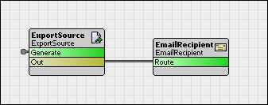

The Report module provides facilities for running periodic background reports on a station.
The ReportService provides a container for the components responsible for generating and routing reports. The process of generating a report is broken down into two components: BReportSource and BReportRecipient.
|  |
(ExportSource and EmailRecipient are concrete implementations for ReportSource and ReportRecipient, respectively.)
generate action gets invoked on
BReportSource.
The action can be invoked manually or automatically via the built-in schedule
property.